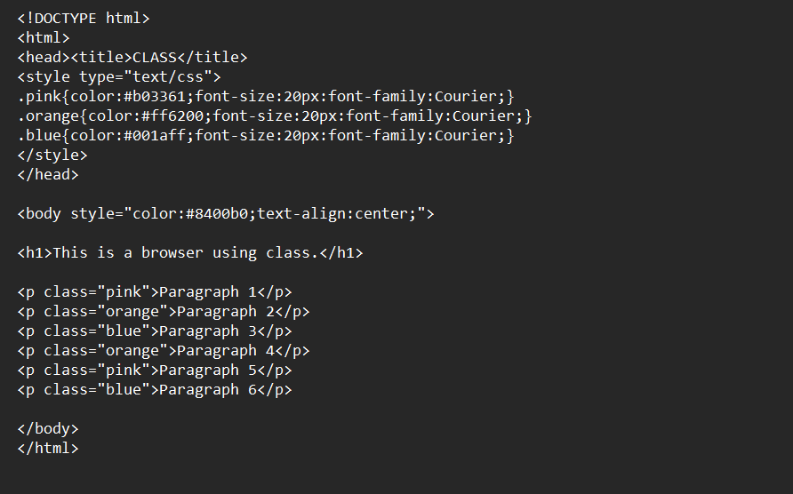
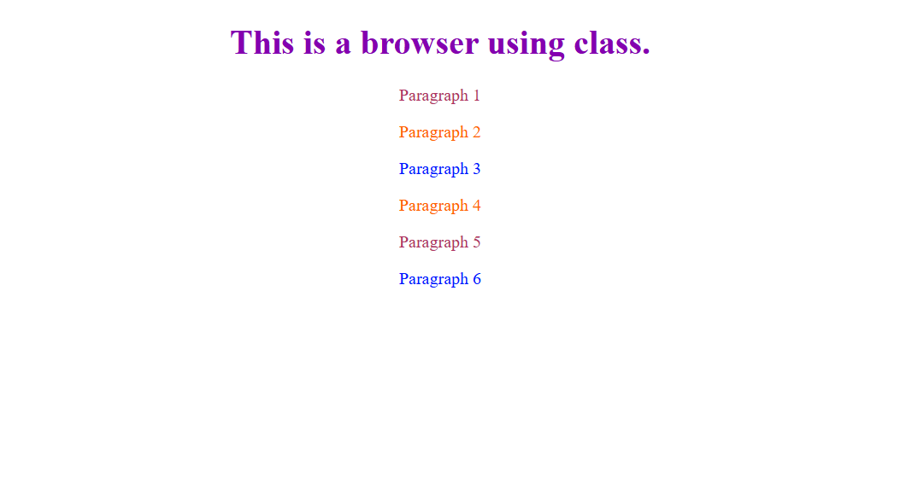

Browser Output and Reflection on Lesson 4
Reflection: In this lesson, I learned that CSS rules are made up of selectors and declarations, which define how HTML elements should appear on a webpage. I understood how classes allow us to apply specific styles to multiple elements and make web design more organized and flexible. I also learned about element + class selectors, which give more control by styling only a specific type of element with a certain class. This lesson taught me that grouping selectors can make coding faster and cleaner since you can style many elements with fewer lines. Overall, I realized that understanding CSS rules and classes is important in creating consistent, efficient, and professional-looking web designs.
Here is an example of a browser using class.

